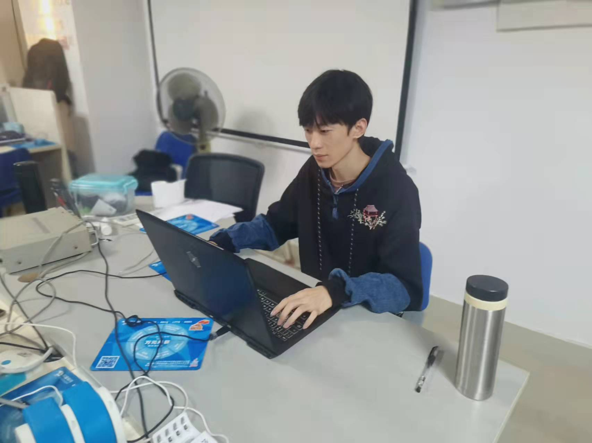

自我介绍
1、个性稳重、具高度责任感，工作态度积极，愿意和能够在没有监督的情况下勤奋地工作，肯学习进取，勤 奋努力;积极于他人沟通;理解力强，思维开阔反应快。融入环境快;耐心，能够不畏挫折，在压力下工作。
2、对待工作认真负责，善于沟通、协调有较强的组织能力与团队精神;活泼开朗、乐观上进、有爱心并善于 施教并行;上进心强、勤于学习能不断提高自身的能力与综合素质。

个人信息
- 姓名
- 王龙
- 年龄
- 23
- 毕业学校
- 桂林电子科技大学信息科技学院
- 学历
- 本科
- 2468327368@qq.com
- 手机
- 18078658392
其他
责任感
max!!!
学习能力
max!!!
坑压能力
max!!!
专业技能
- 1、精通java面向对象编程，良好地规范代码编写习惯
- 2、PS图片美化、Dreamweaver网页设计 精通
- 3、熟练掌握MyEclipse/Eclipse等开发工具
- 4、熟悉Tomcat等服务器配置
- 5、熟练运用JUnit,Debug进行程序调试、SVN项目整合、MyBatis数据库管理
- 6、熟练ajax,jquery等技术, 熟悉html+css+javascript和xml
- 7、熟练运用标准SQL语句,熟悉MySQL，SQLServer2005数据库
- 8、熟练掌握Struts、Spring等开源框架技术，并能够用SSM进行大型项目的开发
- 9、熟悉WEB应用研发的过程及各种常用的设计模式，熟练掌握JSP/Servlet,JDBC,JavaBeans
- 10、能迅速接受学习新的理念、新的技术，能迅速适应公司环境，并在短时间内进入工作状态
工作经历
2021/07 -- 2021/11深蓝软件 | 研发部 | 软件工程师实习生
行业类别：计算机软件 | 企业性质：民营 | 规模：20-99人 |
工作描述：
系统地学习java以及前端各项开发技术，掌握软件开发与测试技能；根据技术规范要求 及项目经理的项目计划安排，完成代码编写，调试，测试和维护。
项目经验
2021/08 -- 至今连锁超市进销存管理系统
软件环境：Tomcat9.0、Ajax+JSP+CSS+Jquery+JavaScript技术
硬件环境：Windows 10
开发工具：Eclipse 8.5